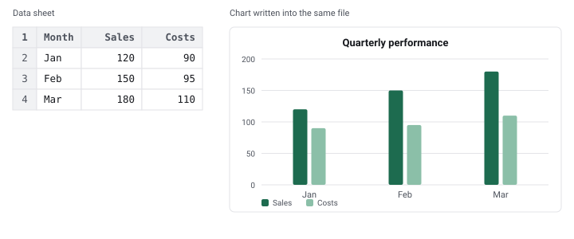

Excel charts and pivot tables for JavaScript
Add a real, native chart to an .xlsx file from Node.js — one that
redraws when the numbers change, not a picture pasted onto a sheet.
Short answer. ExcelJS and SheetJS both build spreadsheets. Neither can write a chart, and neither can build a pivot table. chartsheet writes the chart, drawing and relationship parts they leave
out, straight into the workbook you already produced. It doesn't replace either library — it
finishes the file.

Use it
const fs = require('fs')
const ExcelJS = require('exceljs')
const { addChart } = require('chartsheet')
async function main () {
const wb = new ExcelJS.Workbook()
const ws = wb.addWorksheet('Data')
ws.addRow(['Month', 'Sales', 'Costs'])
ws.addRow(['Jan', 120, 90])
ws.addRow(['Feb', 150, 95])
ws.addRow(['Mar', 180, 110])
let buffer = await wb.xlsx.writeBuffer() // ExcelJS writes the sheet
buffer = await addChart(buffer, { // chartsheet adds the chart
type: 'bar',
title: 'Quarterly performance',
categories: "'Data'!$A$2:$A$4",
series: [
{ nameRef: "'Data'!$B$1", ref: "'Data'!$B$2:$B$4" },
{ nameRef: "'Data'!$C$1", ref: "'Data'!$C$2:$C$4" },
],
anchor: { col: 4, row: 1 }, // top-left cell, zero-based: E2
})
fs.writeFileSync('report.xlsx', buffer)
}
main()Open report.xlsx in Excel and the chart is selectable, editable and live. Change a
value in column B and it redraws. The same file opens in Google Sheets and LibreOffice.
Chart types
bar · column · line · pie ·
doughnut · area · scatter · radar
With titles and axis titles, several series, stacking, data labels, series colours, number formats, legend placement, and as many charts on a sheet as you like.
And pivot tables
ExcelJS has no pivot table API in any version you can install — the implementation was merged
twelve days after its last release and has never been published. addPivotTable writes
a real one, with a working pivot cache, into the finished file.
const { addPivotTable } = require('chartsheet')
buffer = await addPivotTable(buffer, {
sourceSheet: 'Data',
sourceRef: 'A1:C500', // include the header row
targetSheet: 'Report', // an existing, empty sheet
rows: ['Region'],
columns: ['Product'],
values: [{ field: 'Sales', fn: 'sum' }],
})Change the fields, expand it, refresh it — it behaves as one built by hand. How it works and why ExcelJS cannot do it.
It also stops ExcelJS destroying charts
Open a workbook that already has charts, edit a cell, write it back — and ExcelJS deletes every chart, silently. That has been reported three times since 2020 and is still open. Here is what happens and how to stop it.
const { preserveCharts } = require('chartsheet')
const original = fs.readFileSync('template.xlsx') // has charts
// ... ExcelJS loads it, edits it, writes `rewritten` — charts gone ...
const output = await preserveCharts(original, rewritten) // and back againTell me why Excel won't open my file
Excel reports a damaged workbook as "we found a problem with some content" and never says which part. The built-in validator does:
const { validate } = require('chartsheet')
const { valid, errors } = await validate(buffer)
// [ 'xl/charts/chart1.xml: no <Override> content type — a chart part needs
// one declared explicitly; the generic xml Default does not satisfy Excel' ]It works on any .xlsx, not only files this library touched. Unresolved
relationships, missing content-type overrides, duplicate shape ids, drawing parts that are
related but never referenced, <drawing> out of schema order — the defects that
produce that dialog.
Why it exists
Adding a chart to an .xlsx means writing a chart part, a drawing part, two sets of
relationships and content-type overrides, and getting any of it slightly wrong yields a file Excel
refuses to open with no useful error. The most-upvoted feature request on ExcelJS asked for chart
support in 2016. It is still open.
Questions
Does it replace ExcelJS or SheetJS?
No. You build the workbook exactly as you do now and hand the bytes to addChart.
It reads and rewrites the file, so it works with any library that emits a valid
.xlsx.
Is the chart an image?
No. It is a native Excel chart bound to cell ranges. Edit the cells and it updates.
Does it work in the browser?
Yes. The only dependency is JSZip, and everything is plain string and zip manipulation with no native modules.
Which Excel versions?
The output uses the standard OOXML chart parts read by Excel 2007 onward, and by Google Sheets, LibreOffice and Numbers.